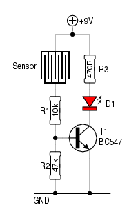
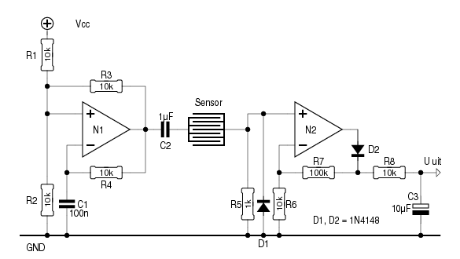
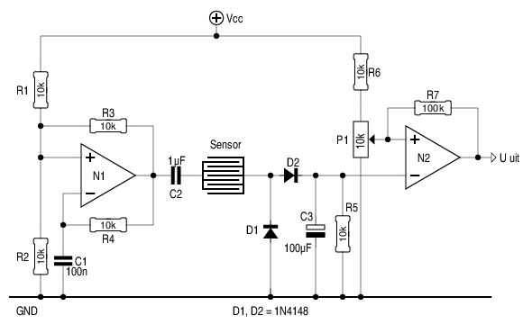
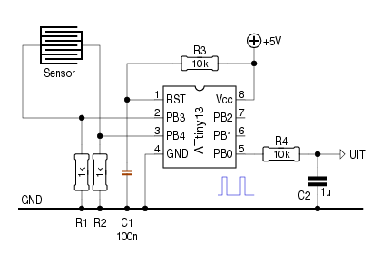
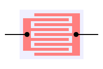

Vocht detecteren met enkele elektronische onderdelen is
eenvoudig, zoals het schema hiernaast toont.
Zodra de contacten van de sensor in aanraking komen met water,
gaat die stroom doorlaten. Die stroom vloeit de basis van
T1 in, waardoor deze in geleiding gaat en de LED
(D1) laat oplichten.
Voila, dat was het dan, over naar iets anders.
Of toch niet?
Wel, als het om een vochtdetector gaat, die
bijvoorbeeld moet waarschuwen voor een lekkende wasmachine, is
deze schakeling uitstekend geschikt.
Enkel in zeldzame gevallen zal er vocht op de sensor
terechtkomen. En of dat weinig danwel veel vocht is, maakt
weinig uit; er lekt iets en dat moet hersteld worden.
Voor andere toepassingen ―denk aan het meten van de
neerslag― is zo'n schakeling ongeschikt. Om te beginnen kan je
er niet echt mee meten, maar bovendien zorgen
elektrolytische processen er voor, dat het metaal van de sensor
na enige tijd “verdwenen” is.
Teneinde dat laatste zoveel mogelijk tegen te gaan, wordt er een
wisselspanning op de sensor gezet. Maar dat maakt het meten dan
weer minder eenvoudig. Hoe dan ook, je hebt op z'n minst een
oscillator nodig voor het opwekken van de wisselstroom, en je
hebt een actieve gelijkrichter nodig om de wisselstroom aan de
“andere kant” van de sensor weer om te zetten naar een
gelijkspanning.

Met twee opamps lukt dat aardig.
N1 vormt ―samen met zijn omgeving― een typische oscillator,
die aan zijn uitgang een blokgolf produceert. C2 maakt van die
blokgolf een “zuivere” wisselspanning; zonder
gelijkstroomcomponent, dus.
R5 doet dienst als belasting voor de sensor, terwijl
D1 belet, dat er negatieve spanningen op de
inverterende ingang van N21 komen te staan.
R6, R7 en D2 zorgen er voor, dat de positieve helften
van de ingangsspanning zowat 10 x versterkt worden. R8
en C3 vertalen deze pulsen naar een nette
gelijkspanning.

Als er niet echt gemeten moet worden, maar een ja/nee-signaal
volstaat, kan het schema links gebruikt worden.
Het zender-gedeelte is identiek aan het vorige schema.
D1 en D2 fungeren hier als diodepomp. Ze
zetten de inkomende wisselspanning om in een gelijkspanning,
waarmee C3 opgeladen wordt. Dat houdt in, dat de
wisselspanning hoger moet zijn dan 0.6V. De gevoeligheid kan
iets verhoogd worden door Schottky-dioden te gebruiken,
bijvoorbeeld de BAT85. Daarnaast kan voor R5 een
grotere weerstand gebruikt worden - 47k, om maar iets te noemen.
Met behulp van P1 kan men instellen, bij welk niveau
N2 zijn uitgang hoog moet maken. “Hoog” staat hier
voor “droog” - daar kan ondermeer een bevochtigingsinstallatie
mee gestuurd worden.
Door de inverterende en de
niet-inverterende ingangen van N2 om te wisselen, zal
de uitgang juist hoog worden bij toenemende vochtigheid - daar
kan dan weer een pomp mee gestuurd worden.
R7 zorgt voor enige hysteresis. Dat is
noodzakelijk, wil men beletten dat de uitgang heen-en-weer gaat
klapperen als de spanning over C3 nagenoeg gelijk is
aan de ingestelde spanning. Ook als de beide ingangen van
N2 omgewisseld worden, moet R7 met de
niet-inverterende ingang verbonden blijven!

Zoals hiernaast te zien is, wordt het allemaal veel eenvoudiger
als we een microcontroller het werk laten doen.
Voor het meten heeft die ―naast de sensor― enkel twee
weerstanden nodig. De werking is heel eenvoudig:
PB3 wordt als ADC-ingang geschakeld.
PB4 wordt als uitgang geschakeld.
PB4 wordt hoog gemaakt.
De spanning op PB3 wordt gemeten.
PB4 wordt als ADC-ingang geschakeld.
PB3 wordt als uitgang geschakeld.
PB3 wordt hoog gemaakt.
De spanning op PB4 wordt gemeten.
Enz...
Op die manier kan de microcontroller de gelijkstroom meten, die door de sensor vloeit, terwijl door de sensor zelf een wisselstroom vloeit.
Daar komt nog een belangrijk voordeel bij, als het er om gaat de levensduur van de sensors te verlengen: een meting uitvoeren duurt niet lang - laten we zeggen 1 milliseconde. Als we nu elke seconde één meting uitvoeren, en in tussentijd beide elektroden op hetzelfde potentiaal brengen, verlengen we de levensduur van die elektroden zowat duizend maal! Als dat niet volstaat, zou er zelfs elke minuut ―afhankelijk van de toepassing― kunnen gemeten worden. Een sensor, die het bij normaal bedrijf 1 jaar volhoudt, kan dan 60.000 jaar mee...
In dit voorbeeld vertaalt de microcontroller de gemeten spanning
naar een PWM-signaal, dat door R4 en C2 uitgemiddeld wordt
naar een gelijkspanning. Maar de gemeten waarden kunnen
uiteraard ook op andere manieren verwerkt worden.
De firmware van de ATtiny13 stelt weinig voor, zoals in de
broncode
te zien is.
 De vorm en de afmetingen van de sensor hangt af van de toepassing.
Dat kan bv. een stukje printplaat zijn, dat geëtst
is als hiernaast. Nadeel is, dat het dunne koperen laagje
waarschijnlijk geen lang leven beschoren is.
Andere matrialen, zoals RVS-plaat of RVS-draad, zijn beter
geschikt om er een vochtsensor mee te bouwen.
Daarnaast bepalen de vorm en de afmetingen van de sensor de waarde van enkele weerstanden, zoals R1 in het eerste schema. Hoe kleiner de weerstand van de (vochtige) sensor, hoe groter R1 moet zijn. Kritisch is R1 in deze schakeling niet.
Anders is het gesteld met R5 in het tweede schema en
R1/R2 in het derde schema. Deze weerstanden
vormen een belasting, en moeten dus kleiner gekozen worden
naargelang de sensor meer stroom doorlaat.
Een algemeen-bruikbare formule valt daar niet voor te bedenken.
Try-and-error is de aangewezen weg...